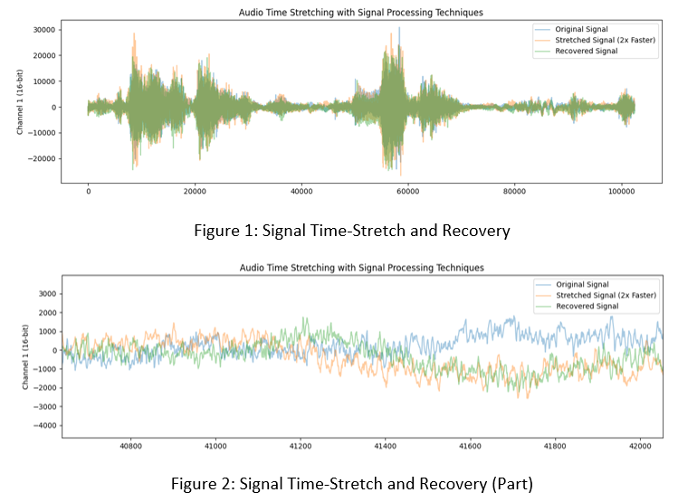
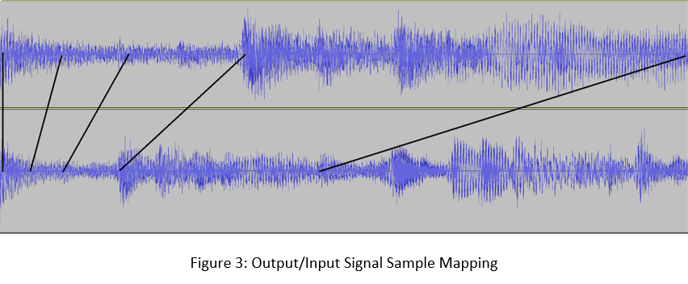

Machine Learning Experiments in Audio Time Stretching
Ben Fields · April 2021
Slowing down a sound - without apparent change in pitch - is something we think should intuitively be possible but for which no natural analog exists. From a signal processing perspective, slowing down audio signals in such a way is a very unnatural operation.
Fourier Transforms allow one to describe an arbitrary signal as the composition of its frequencies; that is, the sum of a set of sine waves. It is intuitive to approach the problem of slowing down audio signals using Fourier and Inverse Fourier Transforms as tools, and this is the approach that most current implementations take. In practical application, one must limit the data to be processed in a signal, even though digital audio signals are already quantized. Such signals have tens of thousands of 16- or 32-bit audio samples per second. To make the data processable, one takes windows in the time domain in order to process the entire signal in batches. Secondly, one must limit the number of frequencies used to describe the signal, typically in the range of human hearing from 20 to 20k Hz, in increments of 1 Hz. These practical constraints, especially splitting up the signal in the time domain, create audible artifacts that become more extreme with larger scale factors.
So how is it that the film, radio, and music industries can produce convincing time-modified audio without artifacts that make everything sound as if recorded in a parking garage? In the expanding direction, and in the compresive direction in cases you're not actually just listening to a professional auctioneer, the increasingly prevalent answer is machine learning. The cop-out approach of course, assuming you have a load of compute on your hands, is to construct a Convolutional Neural Network suited to the task. But what about real-time applications like natural speech generation and integration into digital audio workstations? I supposed it was possible to construct appropriate pre-processing, training data, feature vectors, and algorithm(s) to process audio in a comparable time to deteministic operations like reverb, compression, or equalization.
Source: Scott Bradlee. "Black Hole Sun" (Soundgarden).
After days of training static generators, my efforts yielded something recognizable. Some hours of tuning later, and I generated the following 1/2 speed clip from the above source. The difficulty derives from the fact that small errors in the output data are (un)fortunately audible to us in the form of static and distortion. Additionally, in retrospect, about half of the audible frequencies were not included in the training set used for the following clip, contributing to the heavy distortion.
With about an hour of training, the resulting model can generate 44KHz audio in near-real-time. The most surprising result is the retention of the original audio's primary frequencies without any shifting, even though I designed the system to do just that. I think I will revisit this project in the future to try and construct the new signal as faithfully as possible to the original.